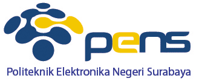

Pembangunan Zona Integritas Menuju Wilayah Bebas dari Korupsi (ZI - WBK) di "Kampus Inovasi" Politeknik Elektronika Negeri Surabaya - OnlineMiS

Pengumuman
Mengenai UI Redesign
Kategori: Pembaruan
Oleh: Admin
Tanggal: 01 Februari 2025
Assalamualaikum wr. wb.,
Sehubungan dengan adanya niat untuk menjadi produktif hari ini, tujuannya adalah mencoba untuk mencapai tampilan yang mendekati standar modern tanpa mengubah struktur dasar dari website ini.
NOTE: Pembaruan halaman ini TIDAK NYATA dan hanya eksperimental untuk kesenangan pribadi.
Selamat Datang di Online.MIS
Anda dapat menikmati layanan kami secara online, seperti :
1.FRS
Fasilitas akan terus dikembangkan.